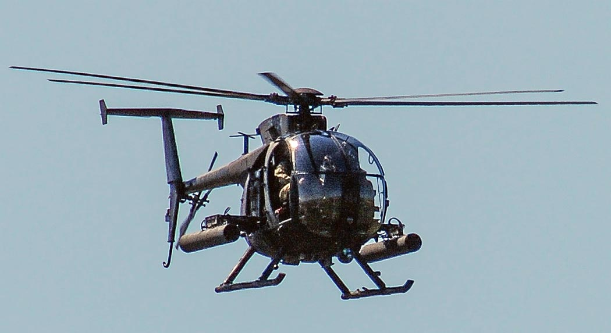

MD Helicopters MH-6 Little Bird
Разработчик: Соединённые Штаты Америки, MD Helicopters, Boeing
Первый полёт: 27 февраля 1963г.
Начало эксплуатации: 1980г.
Единиц произведено: ~1000 (всех модификаций)
MH-6 Littlebird — американский лёгкий многоцелевой вертолет, предназначенный для выполнения разнородных специальных задач тактического уровня. Он является вариантом модели MD 500 и получил известность благодаря своей уникальной маневренности и способности выполнять широкий спектр заданий. Вертолет получил прозвище "Little Bird" (Маленькая птичка) из-за своих компактных размеров и маневренности.
| Двигатели | Максимальная скорость | Радиус действия | Практический потолок | Вооружение |
|---|---|---|---|---|
| 1 × газотурбинный T63-A-5A или T63-A-700 | ~282 км/час | ~430 км | 5 700 м | Пулеметы: 2× 12.7×99mm (.50 BMG) GAU-19; 2× 7.62×51mm NATO M134 Minigun. Неуправляемые ракеты: 2× LAU-68D/A - 7 зарядная ракетная установка, стреляющая (70 mm) Hydra 70. Так же ракеты воздух-земля AGM-114 Hellfire 4 шт. либо ракеты воздух-воздух FIM-92 Stinger 4 шт. |
Ключевые особенности MH-6
- Компактный и манёвренный – идеален для городского боя и операций в лесах.
- Переброска спецназа – бойцы могут сидеть на внешних поручнях и быстро высаживаться.
- Тихий и малозаметный – идеально подходит для скрытных операций.
- Лёгкое вооружение – в ударной версии AH-6 может атаковать пехоту, технику и укрепления.
- Используется Delta Force и Navy SEALs – один из главных вертолётов спецопераций США.
Боевое применение MH-6
- Операция "Гнев Бога" (1980-е) – миссии ЦРУ и спецназа против террористов.
- Операция "Готический Змей" (1993, Сомали) – атака спецназа США, известная по фильму "Падение Черного Ястреба".
- Война в Ираке (2003-2011) – точечные удары по террористам.
- Операция в Афганистане – разведка и поддержка сил спецназначения.
- Операция против ИГИЛ (2010-е) – удары по боевикам.
Вывод
MH-6 Little Bird – маленький, но смертоносный. Этот вертолёт идеально подходит для скрытных операций, быстрой высадки спецназа и атаки врага с неожиданного направления.